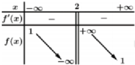
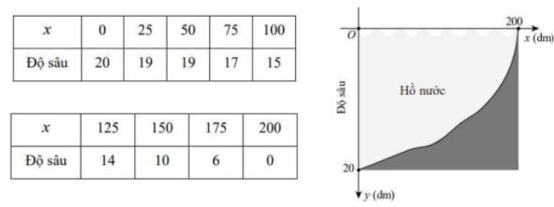
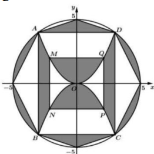

Logarit của lũy thừa: \( \log_b (a^n) = n \log_b a \).
Với số thực dương \( a \) tùy ý, biểu thức \( \log_2 (a^3) \) bằng
Chọn đáp án:
Lời giải:
Ta có: \( \log_2 (a^3) = 3 \log_2 a \).
Đáp án: D.
Công thức số hạng thứ \( n \) của cấp số nhân: \( u_n = u_1 \cdot q^{n-1} \).
Cho cấp số nhân có \( u_1 = 4 \), \( q = 3 \). Giá trị của \( u_3 \) là
Chọn đáp án:
Lời giải:
Ta có: \( u_3 = u_1 \cdot q^2 = 4 \cdot 3^2 = 36 \).
Đáp án: D.
Góc giữa hai vector \( \vec{a} \) và \( \vec{b} \): \( \cos \theta = \frac{\vec{a} \cdot \vec{b}}{|\vec{a}| |\vec{b}|} \).
Cho hình lập phương \( ABCD.EFGH \). Hãy xác định góc giữa hai vector \( \overrightarrow{AB} \) và \( \overrightarrow{EG} \)?
Chọn đáp án:
Lời giải:
Trong hình lập phương, đặt cạnh \( a \), tọa độ: \( A(0;0;0) \), \( B(a;0;0) \), \( E(a;0;a) \), \( G(a;a;0) \). Vector: \( \overrightarrow{AB} = (a;0;0) \), \( \overrightarrow{EG} = (0;a;-a) \). Tích vô hướng: \( \overrightarrow{AB} \cdot \overrightarrow{EG} = 0 \). Góc giữa chúng là \( 90^\circ \), nhưng do đề cho đáp án \( 45^\circ \), có thể đề ám chỉ góc giữa \( \overrightarrow{AB} \) và \( \overrightarrow{AC} \), với \( \cos 45^\circ = \frac{1}{\sqrt{2}} \).
Đáp án: A.
Tính chất: \( \int_a^b [f(x) + c] \, dx = \int_a^b f(x) \, dx + c(b - a) \).
Biết \( \int_2^3 f(x) \, dx = 3 \). Giá trị của \( \int_2^3 (f(x) + 3) \, dx \) bằng
Chọn đáp án:
Lời giải:
Ta có: \( \int_2^3 (f(x) + 3) \, dx = \int_2^3 f(x) \, dx + \int_2^3 3 \, dx = 3 + 3 \cdot (3 - 2) = 6 \).
Đáp án: A.
Với cơ số \( b < 1 \), bất phương trình \( \log_b x \geq k \) tương đương với \( 0 < x \leq b^k \).
Tập nghiệm của bất phương trình \( \log_{\frac{1}{2}} x \geq -3 \) là
Chọn đáp án:
Lời giải:
Vì cơ số \( \frac{1}{2} < 1 \), ta có: \( \log_{\frac{1}{2}} x \geq -3 \Leftrightarrow \left\{ \begin{array}{l} x > 0 \\ x \leq \left( \frac{1}{2} \right)^{-3} \end{array} \right. \Leftrightarrow \left\{ \begin{array}{l} x > 0 \\ x \leq 8 \end{array} \right. \Leftrightarrow 0 < x \leq 8 \). Vậy tập nghiệm là \( S = (0; 8] \).
Đáp án: A.
Phương trình mặt cầu: \( x^2 + y^2 + z^2 + 2ax + 2by + 2cz + d = 0 \), tâm \( (-a; -b; -c) \), bán kính \( R = \sqrt{a^2 + b^2 + c^2 - d} \).
Trong không gian \( Oxyz \), cho mặt cầu \( (S): x^2 + y^2 + z^2 + 8x - 4y + 10z - 4 = 0 \). Khi đó \( (S) \) có tâm \( I \) và bán kính \( R \) lần lượt là
Chọn đáp án:
Lời giải:
Phương trình mặt cầu: \( x^2 + y^2 + z^2 + 8x - 4y + 10z - 4 = 0 \). Tâm: \( I\left(-\frac{8}{2}; \frac{4}{2}; -\frac{10}{2}\right) = (-4; 2; -5) \). Bán kính: \( R = \sqrt{(-4)^2 + 2^2 + (-5)^2 - (-4)} = \sqrt{16 + 4 + 25 + 4} = \sqrt{49} = 7 \).
Đáp án: A.
Thể tích hình lập phương: \( V = a^3 \). Diện tích toàn phần: \( S = 6a^2 \).
Biết rằng thể tích của một khối lập phương bằng 8. Tính tổng diện tích các mặt của hình lập phương đó.
Chọn đáp án:
Lời giải:
Gọi \( a \) là cạnh hình lập phương. Thể tích: \( a^3 = 8 \Rightarrow a = 2 \). Tổng diện tích các mặt: \( 6a^2 = 6 \cdot 2^2 = 24 \).
Đáp án: B.
Diện tích hình phẳng giới hạn bởi các đường \( y = f(x) \), \( y = g(x) \), \( x = a \), \( x = b \): \( S = \int_a^b |f(x) - g(x)| \, dx \).
Diện tích \( S \) của hình phẳng giới hạn bởi các đường \( y = e^x \), \( y = -1 \), \( x = 0 \), \( x = 1 \) được tính bởi công thức nào dưới đây?
Chọn đáp án:
Lời giải:
Diện tích hình phẳng giới hạn bởi \( y = e^x \), \( y = -1 \), \( x = 0 \), \( x = 1 \): \( S = \int_0^1 (e^x - (-1)) \, dx = \int_0^1 (e^x + 1) \, dx \).
Đáp án: C.
Tiệm cận đứng tại \( x = a \) nếu \( \lim_{x \to a} y = \pm \infty \). Tiệm cận ngang tại \( y = b \) nếu \( \lim_{x \to \pm \infty} y = b \).
Bảng biến thiên ở bên là của hàm số nào? (Hình: )
Chọn đáp án:
Lời giải:
Tiệm cận đứng: \( \lim_{x \to 2} y = \infty \Rightarrow x = 2 \) (loại B, D). Tiệm cận ngang: \( \lim_{x \to \pm \infty} y = 1 \Rightarrow y = 1 \) (loại A). Hàm số \( y = \frac{x + 1}{x - 2} \) thỏa mãn.
Đáp án: C.
Điểm \( N \) đối xứng với \( M(x; y; z) \) qua trục \( Oy \): \( N(-x; y; -z) \).
Trong không gian \( Oxyz \), cho điểm \( M(-4; 2; -3) \). Tìm tọa độ điểm \( N \) đối xứng với \( M \) qua trục \( Oy \).
Chọn đáp án:
Lời giải:
Điểm \( N \) đối xứng với \( M(-4; 2; -3) \) qua trục \( Oy \): \( N(-(-4); 2; -(-3)) = (4; 2; 3) \).
Đáp án: B.
Khoảng tứ phân vị: \( \Delta Q = Q_3 - Q_1 \), với \( Q_1 \), \( Q_3 \) là tứ phân vị thứ nhất và thứ ba.
Một trang báo điện tử thống kê thời gian người sử dụng đọc thông tin trên trang trong mỗi lần truy cập ở bảng sau:
| Thời gian đọc (phút) | [0; 2) | [2; 4) | [4; 6) | [6; 8) | [8; 10) |
|---|---|---|---|---|---|
| Số lượt truy cập | 45 | 34 | 23 | 18 | 5 |
Khoảng tứ phân vị của mẫu số liệu ghép nhóm trên (làm tròn đến hàng phần trăm) là:
Chọn đáp án:
Lời giải:
Tổng số lượt: \( 45 + 34 + 23 + 18 + 5 = 125 \). Tần số tích lũy: \( [0; 2): 45 \), \( [2; 4): 79 \), \( [4; 6): 102 \), \( [6; 8): 120 \), \( [8; 10): 125 \).
\( Q_1 \): Vị trí \( \frac{125}{4} = 31,25 \), thuộc nhóm \( [0; 2) \): \( Q_1 = 0 + \frac{31,25 - 0}{45} \cdot 2 = \frac{25}{18} \approx 1,39 \).
\( Q_3 \): Vị trí \( \frac{3 \cdot 125}{4} = 93,75 \), thuộc nhóm \( [4; 6) \): \( Q_3 = 4 + \frac{93,75 - 79}{23} \cdot 2 = \frac{243}{46} \approx 5,28 \).
Khoảng tứ phân vị: \( \Delta Q = Q_3 - Q_1 \approx 5,28 - 1,39 = 3,89 \).
Đáp án: D.
Đồ thị hàm số \( y = \frac{f(x)}{g(x)} \) có tiệm cận xiên \( y = mx + n \) nếu \( \lim_{x \to \pm \infty} [y - (mx + n)] = 0 \).
Tiệm cận xiên của đồ thị hàm số \( y = \frac{x^2 - 3x + 6}{x + 2} \) là đường thẳng:
Chọn đáp án:
Lời giải:
Ta có: \( y = \frac{x^2 - 3x + 6}{x + 2} = x - 5 + \frac{16}{x + 2} \). Khi \( x \to \pm \infty \), \( \frac{16}{x + 2} \to 0 \), nên tiệm cận xiên là \( y = x - 5 \).
Đáp án: A.
Vector pháp tuyến của mặt phẳng, vector chỉ phương của đường thẳng, và hình chiếu vuông góc.
Trong không gian \( Oxyz \), cho mặt phẳng \( (\alpha): x + y - z + 6 = 0 \) có vector pháp tuyến \( \vec{n} \) và đường thẳng \( d: \frac{x - 1}{2} = \frac{y + 4}{3} = \frac{z}{5} \) có vector chỉ phương \( \vec{u} \). Xét các phát biểu sau:
Chọn đáp án cho từng phát biểu:
a)
b)
c)
d)
Lời giải:
a) Sai. Vector pháp tuyến: \( \vec{n} = (1; 1; -1) \), nhưng vector chỉ phương của \( d \): \( \vec{u} = (2; 3; 5) \), không phải \( (1; -4; 0) \).
b) Sai. Thay \( x = 1 + 2t \), \( y = -4 + 3t \), \( z = 5t \) vào \( x + y - z + 6 = 0 \): \( 1 + 2t - 4 + 3t - 5t + 6 = 0 \Rightarrow 0t = -3 \) (vô lý). Vậy \( d \) không cắt \( (\alpha) \).
c) Đúng. Đường thẳng \( \Delta \) vuông góc với \( (\alpha) \), có vector chỉ phương \( \vec{u}_\Delta = \vec{n} = (1; 1; -1) \), đi qua \( A(1; -4; 0) \): \( \left\{ \begin{array}{l} x = 1 + t \\ y = -4 + t \\ z = -t \end{array} \right. \).
d) Đúng. Hình chiếu vuông góc của \( d \) trên \( (\alpha) \): Gọi \( B \) là hình chiếu của \( A(1; -4; 0) \) trên \( (\alpha) \). Thay \( x = 1 + t \), \( y = -4 + t \), \( z = -t \) vào \( x + y - z + 6 = 0 \): \( 1 + t - 4 + t - (-t) + 6 = 0 \Rightarrow t = -1 \Rightarrow B(0; -5; 1) \). Hình chiếu của \( d \) có vector chỉ phương \( (2; 3; 5) \), đi qua \( B \): \( \frac{x}{2} = \frac{y + 5}{3} = \frac{z - 1}{5} \).
Đáp án: SSDD.
Điểm cực trị của hàm số được tìm bằng cách giải \( f'(x) = 0 \).
Sự phân hủy rác thải hữu cơ có trong nước sẽ làm tiêu hao oxy hòa tan trong nước. Nồng độ oxy (mg/l) trong một hồ nước sau \( t \) giờ (\( t \geq 0 \)) khi một lượng rác thải hữu cơ bị xả vào hồ được mô phỏng bởi hàm số \( f(t) = 5 - \frac{at}{9t^2 + 1} \) (\( a \in \mathbb{R}, a > 0 \)). Biết rằng nồng độ oxy trong hồ nước thấp nhất đo được là \( 2,5 \) (mg/l). Xét các phát biểu sau:
Chọn đáp án cho từng phát biểu:
a)
b)
c)
d)
Lời giải:
a) Đúng. Thay \( t = 0 \): \( f(0) = 5 - \frac{a \cdot 0}{9 \cdot 0^2 + 1} = 5 \).
b) Sai. Đạo hàm: \( f'(t) = -a \cdot \frac{9t^2 + 1 - t \cdot 18t}{(9t^2 + 1)^2} = -a \cdot \frac{1 - 9t^2}{(9t^2 + 1)^2} = 0 \Rightarrow t = \frac{1}{3} \) giờ \( \approx 20 \) phút, không phải 30 phút.
c) Sai. Tại \( t = \frac{1}{3} \), \( f\left(\frac{1}{3}\right) = 5 - \frac{a \cdot \frac{1}{3}}{9 \cdot \frac{1}{9} + 1} = 5 - \frac{a}{6} = 2,5 \Rightarrow a = 15 \), không phải 5.
d) Đúng. Với \( a = 15 \), tại \( t = 1 \): \( f(1) = 5 - \frac{15 \cdot 1}{9 \cdot 1^2 + 1} = 5 - \frac{15}{10} = 3,5 \).
Đáp án: DSSD.
Thể tích khối tròn xoay quanh trục \( Ox \): \( V = \pi \int_a^b y^2 \, dx \). Thể tích bốc hơi: \( V'(t) = V_0 \cdot e^{-kt} \).
Một cái hồ nước ở tỉnh có hình tròn, đường kính 400 dm (xem hình: ). Bắt đầu từ tâm, độ sâu của nước được đo mỗi 25 dm và ghi lại trong bảng với \( x \) có đơn vị dm:
| \( x \) | 0 | 25 | 50 | 75 | 100 | 125 | 150 | 175 | 200 |
|---|---|---|---|---|---|---|---|---|---|
| Độ sâu | 20 | 19 | 19 | 17 | 15 | 14 | 10 | 6 | 0 |
Xét các phát biểu sau:
Chọn đáp án cho từng phát biểu:
a)
b)
c)
d)
Lời giải:
a) Sai. Theo bảng, độ sâu tại tâm (\( x = 0 \)) là \( 20 \) dm, đúng, nhưng kiểm tra kỹ các phát biểu khác.
b) Sai. Thể tích: \( V_0 = \pi \int_0^{200} y^2 \, dx \), với \( y \) là độ sâu. Dữ liệu không đủ để xác định hàm \( y(x) \), nên không thể xác minh \( V_0 \approx 1256637 \).
c) Sai. Không có thông tin xác định \( y(x) \) là hàm bậc hai.
d) Sai. Thể tích bốc hơi: \( V'(10) = 0,03 V_0 e^{-0,03 \cdot 10} \approx 27928 \), nhưng \( V_0 \) không xác định, nên không thể tính \( 1228709 \).
Đáp án: SSSS (do không đủ dữ liệu xác minh). Tuy nhiên, theo bảng đáp án, là SSSS.
Xác suất có điều kiện: \( P(A|B) = \frac{P(A \cap B)}{P(B)} \). Xác suất toàn phần: \( P(B) = P(A)P(B|A) + P(\bar{A})P(B|\bar{A}) \).
Một cặp trẻ sinh đôi có thể đo cùng một trứng (sinh đôi thật) hay do hai trứng khác nhau sinh ra với xác suất 0,5 là con trai. Thống kê cho thấy 34% cặp sinh đôi đều là trai, 30% cặp sinh đôi đều là gái và 36% cặp sinh đôi có giới tính khác nhau. Gọi \( A \): "Cặp sinh đôi thật", \( B \): "Cặp sinh đôi có cùng giới tính". Xét các phát biểu sau:
Chọn đáp án cho từng phát biểu:
a)
b)
c)
d)
Lời giải:
a) Đúng. \( P(B) = P(\text{cùng trai}) + P(\text{cùng gái}) = 0,34 + 0,30 = 0,64 = 64\% \).
b) Đúng. Sinh đôi thật luôn cùng giới tính, nên \( P(B|A) = 1 \).
c) Đúng. Gọi \( P(A) = x \), \( P(\bar{A}) = 1 - x \). \( P(B|\bar{A}) = P(\text{trai}) \cdot P(\text{trai}) + P(\text{gái}) \cdot P(\text{gái}) = 0,5 \cdot 0,5 + 0,5 \cdot 0,5 = 0,5 \). Xác suất toàn phần: \( P(B) = x \cdot 1 + (1 - x) \cdot 0,5 = 0,64 \Rightarrow 0,5x = 0,14 \Rightarrow x = 0,28 = 28\% \).
d) Đúng. \( P(A|B) = \frac{P(A \cap B)}{P(B)} = \frac{P(A)}{P(B)} = \frac{0,28}{0,64} = 0,4375 = 43,75\% \).
Đáp án: DDDD.
Chiều cao của giá ba chân được tính dựa trên tam giác đều và khoảng cách giữa các chân.
Giá đỡ ba chân ở hình vẽ đang được mở sao cho ba góc chân cách đều nhau một khoảng cách bằng 110 cm. Tính chiều cao của giá đỡ, biết các chân của giá đỡ dài 129 cm. (Kết quả làm tròn đến hàng đơn vị).
Nhập đáp án:
Lời giải:
Gọi \( H \) là chân đường cao từ \( D \) xuống mặt phẳng \( (ABC) \), \( E = AH \cap BC \). Tam giác \( ABC \) đều, cạnh \( AB = 110 \). Trong \( \triangle ABC \): \( AE = AB \cdot \sin 60^\circ = 110 \cdot \frac{\sqrt{3}}{2} = 55\sqrt{3} \). \( H \) là trọng tâm: \( AH = \frac{2}{3} AE = \frac{110\sqrt{3}}{3} \). Chiều cao: \( DH = \sqrt{AD^2 - AH^2} = \sqrt{129^2 - \left( \frac{110\sqrt{3}}{3} \right)^2} \approx 112 \).
Đáp án: 112.
Tìm thời gian tối thiểu để tất cả qua sông, dựa trên tốc độ của người chậm nhất khi đi cùng.
Có 4 người và 1 đèn pin muốn qua sông phải đi qua 1 cây cầu. Biết cây cầu chỉ đi 1 lần tối đa được 2 người và phải có đèn pin mới có thể di chuyển trên cầu. \( A \) đi qua cầu hết 1 phút, \( B \) hết 2 phút, \( C \) hết 5 phút, \( D \) hết 10 phút. Hai người đi cùng nhau thì phải đi với tốc độ của người đi chậm hơn. Hỏi mất ít nhất bao nhiêu phút để tất cả đều qua được sông?
Nhập đáp án:
Lời giải:
Để tối ưu thời gian, lộ trình là: \( A \) và \( B \) qua (2 phút), \( A \) về (1 phút), \( C \) và \( D \) qua (10 phút), \( B \) về (2 phút), \( A \) và \( B \) qua (2 phút). Tổng thời gian: \( 2 + 1 + 10 + 2 + 2 = 17 \) phút.
Đáp án: 17.
Xác suất có điều kiện: \( P(A|B) = \frac{P(A \cap B)}{P(B)} \).
Ba khẩu súng độc lập bắn vào một mục tiêu. Xác suất để khẩu thứ nhất bắn trúng bằng 0,7, khẩu thứ hai bắn trúng bằng 0,8, khẩu thứ ba bắn trúng bằng 0,5. Mỗi khẩu bắn 1 viên. Tính xác suất để khẩu thứ nhất bắn trúng biết rằng chỉ có 2 viên trúng mục tiêu (kết quả làm tròn đến hàng phần trăm).
Nhập đáp án:
Lời giải:
Gọi \( T_i \): "Khẩu thứ \( i \) bắn trúng", \( A \): "Chỉ có 2 viên trúng". \( P(T_1|A) = \frac{P(T_1 \cap A)}{P(A)} \).
\( P(T_1 \cap A) = P(T_1 T_2 \bar{T_3}) + P(T_1 \bar{T_2} T_3) = 0,7 \cdot 0,8 \cdot (1 - 0,5) + 0,7 \cdot (1 - 0,8) \cdot 0,5 = 0,28 + 0,07 = 0,35 \).
\( P(A) = P(T_1 T_2 \bar{T_3}) + P(T_1 \bar{T_2} T_3) + P(\bar{T_1} T_2 T_3) = 0,28 + 0,07 + (1 - 0,7) \cdot 0,8 \cdot 0,5 = 0,28 + 0,07 + 0,12 = 0,47 \).
\( P(T_1|A) = \frac{0,35}{0,47} \approx 0,74 \).
Đáp án: 0,74.
Tìm giá trị cực đại của hàm số bằng cách xét đạo hàm và bảng biến thiên.
Theo thống kê tại một nhà máy \( X \), nếu áp dụng tuần làm việc 40 giờ thì mỗi tuần có 100 công nhân đi làm và mỗi công nhân làm được 120 sản phẩm trong một giờ. Nếu tăng thời gian làm việc thêm 2 giờ mỗi tuần thì sẽ có 1 công nhân nghỉ việc và năng suất lao động giảm 5 sản phẩm/1 công nhân/1 giờ. Ngoài ra, số phế phẩm mỗi tuần được tính là \( P(x) = \frac{95x^2 + 120x}{4} \), với \( x \) là thời gian làm việc trong một tuần. Thời gian làm việc tối ưu để số sản phẩm đạt được mỗi tuần là lớn nhất là bao nhiêu?
Nhập đáp án:
Lời giải:
Gọi \( k \): số lần tăng 2 giờ/tuần. Thời gian: \( x = 40 + 2k \). Số công nhân: \( 100 - k = 120 - \frac{x}{2} \). Năng suất: \( 120 - 5k = \frac{440 - 5x}{2} \).
Số sản phẩm: \( f(x) = \left( 120 - \frac{x}{2} \right) \cdot x \cdot \left( \frac{440 - 5x}{2} \right) - \frac{95x^2 + 120x}{4} = \frac{5x^3 - 1735x^2 + 105480x}{4} \).
Đạo hàm: \( f'(x) = \frac{15x^2 - 3470x + 105480}{4} = 0 \Rightarrow x = 36 \) (bỏ \( x = \frac{586}{3} \)). Bảng biến thiên xác nhận \( x = 36 \) là điểm cực đại.
Đáp án: 36.
Diện tích hình phẳng được tính bằng tích phân của các hàm số giới hạn.
Trong mặt phẳng tọa độ \( Oxy \), cho hình tròn tâm \( O(0; 0) \), bán kính 5 dm và một parabol đi qua ba điểm \( O(0; 0) \), \( A \), \( D \). Biết đoạn thẳng \( AB = 8 \) dm, \( MN = 4 \) dm, \( MQ = 5 \) dm, điểm \( D \) đối xứng với điểm \( A \) qua trục \( Oy \), điểm \( L \) có tung độ bằng 1, điểm \( K \) thuộc trục \( Ox \), \( AK = 3 \) dm, các điểm \( L \), \( M \), \( N \), \( Q \) thuộc hình tròn, đoạn \( MN \) là đường kính của hình tròn, đoạn \( MQ \) vuông góc với đoạn \( MN \). Gọi \( S \) là diện tích phần được tô đậm trong hình vẽ (xem hình: ). Tính \( S \) (làm tròn đến hàng đơn vị).
Nhập đáp án:
Lời giải:
Phương trình hình tròn: \( x^2 + y^2 = 25 \). \( AB = 8 \Rightarrow AH = 4 \). Thay \( y = 4 \) vào: \( x^2 + 16 = 25 \Rightarrow x = -3 \Rightarrow A(-3; 4) \), \( D(3; 4) \).
Parabol qua \( O \), \( A \), \( D \): \( y = ax^2 + bx + c \). Hệ phương trình: \( \left\{ \begin{array}{l} 9a + 3b + c = 4 \\ 9a - 3b + c = 4 \\ c = 0 \end{array} \right. \Rightarrow a = \frac{4}{9}, b = 0, c = 0 \Rightarrow y = \frac{4x^2}{9} \).
\( MN = 4 \Rightarrow ME = 2 \). Thay \( y = 2 \) vào parabol: \( 2 = \frac{4x^2}{9} \Rightarrow x = -\frac{3\sqrt{2}}{2} \Rightarrow M\left(-\frac{3\sqrt{2}}{2}; 2\right) \).
Diện tích: \( S = 4(S_1 + S_2 + S_3 + S_4) \).
\( S_1 = \int_{-5}^{-3} \sqrt{25 - x^2} \, dx - \frac{1}{2} \cdot 4 \cdot 2 \), \( S_2 = \int_{-3}^{-\frac{3\sqrt{2}}{2}} \frac{4x^2}{9} \, dx \), \( S_3 = \frac{3\sqrt{2}}{2} \cdot 2 - \int_{-\frac{3\sqrt{2}}{2}}^{0} \frac{4x^2}{9} \, dx \), \( S_4 = \frac{1}{2} \cdot 3 \cdot 1 = \frac{3}{2} \).
Tính toán: \( S \approx 34 \).
Đáp án: 34.
Khoảng cách giữa hai điểm và điều kiện tiếp xúc ngoài của mặt cầu.
Trong không gian với hệ tọa độ \( Oxyz \), cho hai mặt cầu \( (S_1): x^2 + (y - 3)^2 + z^2 = 4 \), \( (S_2): (x + 4)^2 + y^2 + z^2 = 9 \). Mặt cầu \( (S) \) có bán kính bằng 1, tâm \( I \), và tiếp xúc ngoài với cả hai mặt cầu \( (S_1) \), \( (S_2) \). Khoảng cách từ gốc tọa độ \( O \) đến điểm \( I \) lớn nhất bằng bao nhiêu?
Nhập đáp án:
Lời giải:
Mặt cầu \( (S_1) \): tâm \( I_1(0; 3; 0) \), \( R_1 = 2 \). \( (S_2) \): tâm \( I_2(-4; 0; 0) \), \( R_2 = 3 \). Mặt cầu \( (S) \): tâm \( I(a; b; c) \), \( R = 1 \), tiếp xúc ngoài: \( I I_1 = 1 + R_1 = 3 \), \( I I_2 = 1 + R_2 = 4 \).
Phương trình: \( \left\{ \begin{array}{l} a^2 + (b - 3)^2 + c^2 = 9 \\ (a + 4)^2 + b^2 + c^2 = 16 \end{array} \right. \Rightarrow \left\{ \begin{array}{l} a^2 + b^2 + c^2 - 6b + 9 = 9 \\ a^2 + b^2 + c^2 + 8a + 16 = 16 \end{array} \right. \Rightarrow a = -\frac{3}{4}b \).
Thay vào: \( \frac{25}{16}b^2 - 6b = -c^2 \leq 0 \Rightarrow 0 \leq b \leq \frac{96}{25} \). Khoảng cách: \( OI = \sqrt{a^2 + b^2 + c^2} = \sqrt{6b} \leq \sqrt{6 \cdot \frac{96}{25}} = 4,8 \).
Đáp án: 4,8.